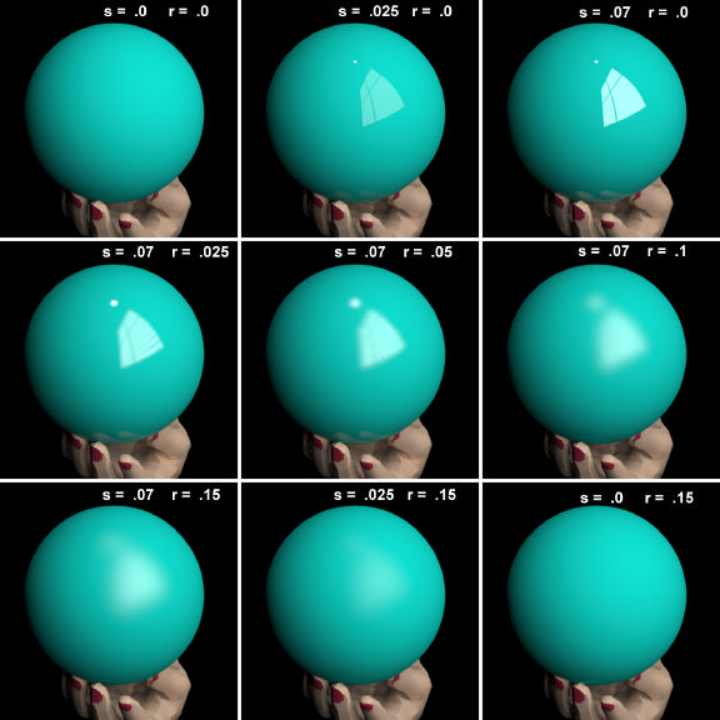

Most Radiance material definitions require a specularity and roughness value to be set. Most 3D rendering programs have some sort of specularity and roughness parameter, but these are not necessarily linked back to a measurable physical property. In Radiance, these values are measurable.
However, unlike the diffuse RGB reflectance, which can be estimated through
greyscale charts and through calibration with macbethcal and a Macbeth
ColourChecker, it is a bit harder to measure specularity and roughness.
How to measure specularity
Specularity is not clearly defined in the Radiance reference manual. However, it is basically the ratio of reflection that is specular and not diffuse. For instance, the total surface reflectance of an object is given as so.
total surface reflectance = diffuse reflectance + specular reflectance
An integrating sphere-based spectrometer measures the diffuse reflectance by giving a measurement with the specular component excluded (i.e. what's left is the diffuse component). It also measures the total surface reflectance by giving a measurement with the specular component included (i.e. diffuse + specular reflectance). Therefore you can calculate specularity as so:
specularity = specular component / total surface reflectance
specular component = total surface reflectance - diffuse reflectance
specularity = (SCI - SCE) / SCI
However, not all of us have access to a spectrometer. Unfortunately, the only alternative is to use more heuristic methods. One way is to simulate an object under controlled conditions and compare it to a physical sample. Another way is simply to make an educated guess. The good news is that our environment isn't filled with extremely specular materials, and so a slight inaccuracy may not harm the simulation too much, depending on what you are simulating.
How to measure roughness
Roughness is the root-mean-squared (RMS) facet slope of the surface. This is the microscopic surface roughness: the more jagged the facets are, the rougher it is and more blurry reflections will appear. Note that this is not the roughness that is visible to the naked eye. Unless you have access to a very powerful microscope, again, it's best to stick to a heuristic approach and fiddle with the number until you get what you like.
An intuitive example of specularity and roughness
There are a few rules of thumb when guessing these numbers, which I've taken from the Radiance reference manual:
- Most plastic (i.e. non-metallic) surfaces have a specularity of .0 to .1
- Metallic surfaces generally have a specularity from .8 to .99, but are usually .9 or greater
- Both plastic and metallic surfaces rarely exceed a roughness of .2
The Siggraph 1998 course gives some really great graphical examples of the difference in specular and roughness values. I've copied the images here for reference, but they are not produced by me and are the fine work and copyrighted by Rob Shakespeare.
This set of images describes specularity and roughness values for plastic materials:

Here is the same for metallic materials:
As great as these images are, I find some bugbears. Firstly, the values tend to jump around a bit instead of linearly. Secondly, although I'm sure it was a fantastic work of art in 1998, 20 years later we might need a more modernised test image, perhaps using higher-polygon models that we might typically use nowadays.
I've recreated this benchmark image with this in mind. The principles are as follows:
- Show more complex geometry in the test image
- Show more colours in the test image
- Show a linear range of values
- Place the geometry in a more complex environment
I've used a basic sphere, the Utah
teapot, the Stanford
bunny, and Suzanne, the Blender
monkey.
The materials are taken from the galvanised sheet metal that comes with the
sample materials.rad file with Radiance, and the remaining red, green
(foliage), and blue (sky blue) from the Macbeth ColourChecker chart. The range
of values are those that follow the rules of thumb above. Also, The geometry is
placed on top of a displaced rocky ground, with a skymap environment, where the
sky itself has been swapped out for a gensky sky.
All images are rendered using this publicly available Radiance test scene
repository. After a
rendering, they are processed with pcond -h.
To start with, here is a comparison for plastic materials with different levels of specularity and roughness. I recommend you download the high resolution version, to fully appreciate the differences.
{kind=link}
Plastics differ from metallic materials in that the specular highlights of plastics are white, whereas the specular highlights of metallic materials are tinted. Here's an example.
So here is a final chart of examples for metallic materials. Again, you can download the high resolution version here to see the details.
{kind=link}
As you can see, the effects can be quite subtle to notice, so I wouldn't stress too much if the value isn't perfectly right. Feel free to use the repository to create your own test images.